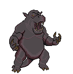

Hippo

The Hippo is a powerful character inspired by the Giff from Dungeons & Dragons. This space-age hippo uses advanced technology, firearms, and brute strength to overpower enemies. The Hippo is one of the strongest character classes, but this strength comes with a major drawback: limited agility and mobility. The abilities and skills are still being developed.
Rat
The Rat is a necromancer-style character that uses the power of the dead to overwhelm enemies. The Rat can summon armies of undead lab rats and call upon them to fight alongside it. These summons focus on dealing high necrotic damage and overwhelming enemies through sheer numbers.
Pangolin

The Pangolin is a brute-force character built around unarmed combat and fist weapons. Its damage can increase based on its armor, allowing it to use its own body weight to crush enemies. The Pangolin has no ranged attacks, but makes up for this with high mobility and strong sustained damage.